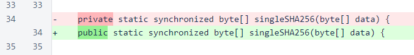
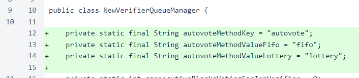
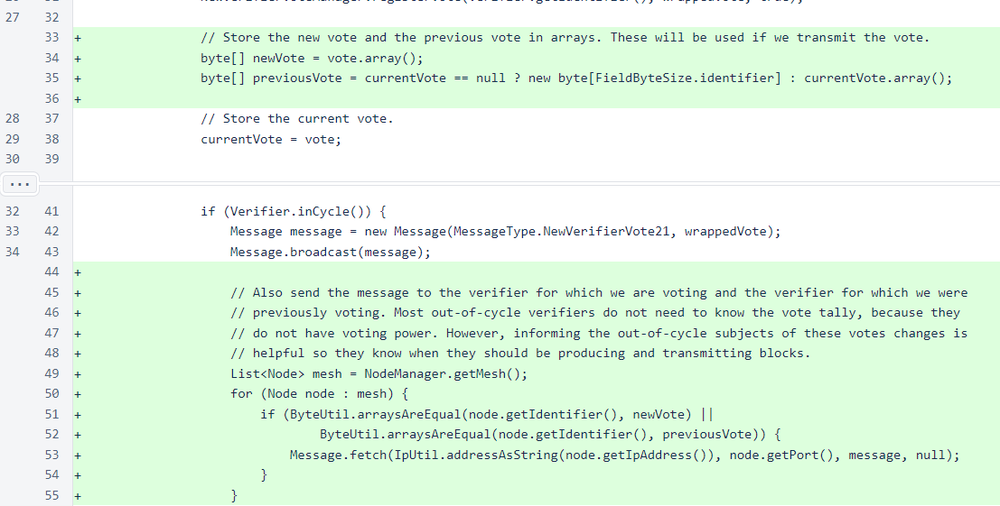
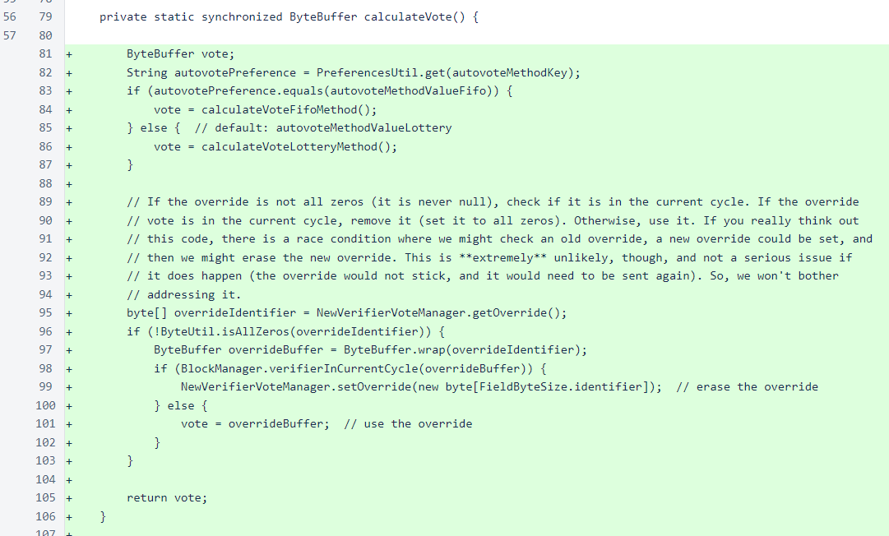
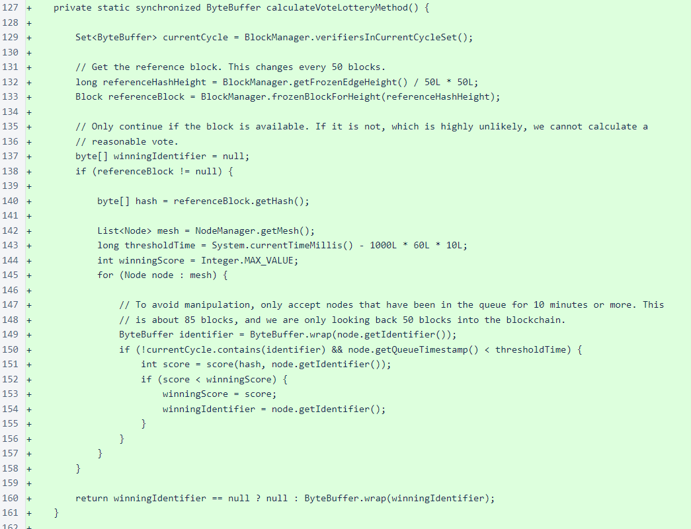
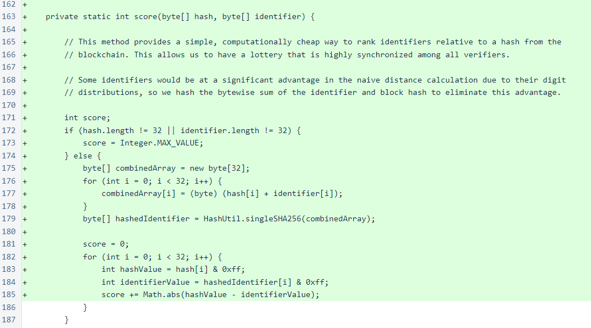
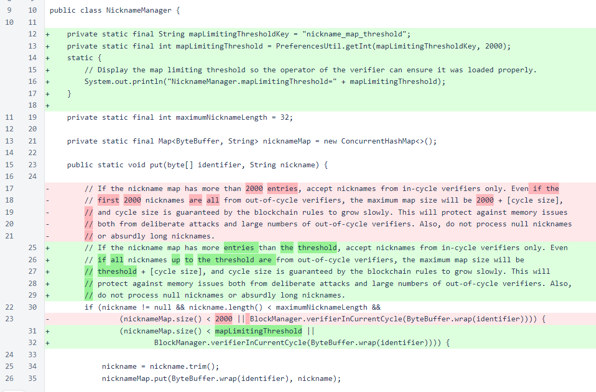
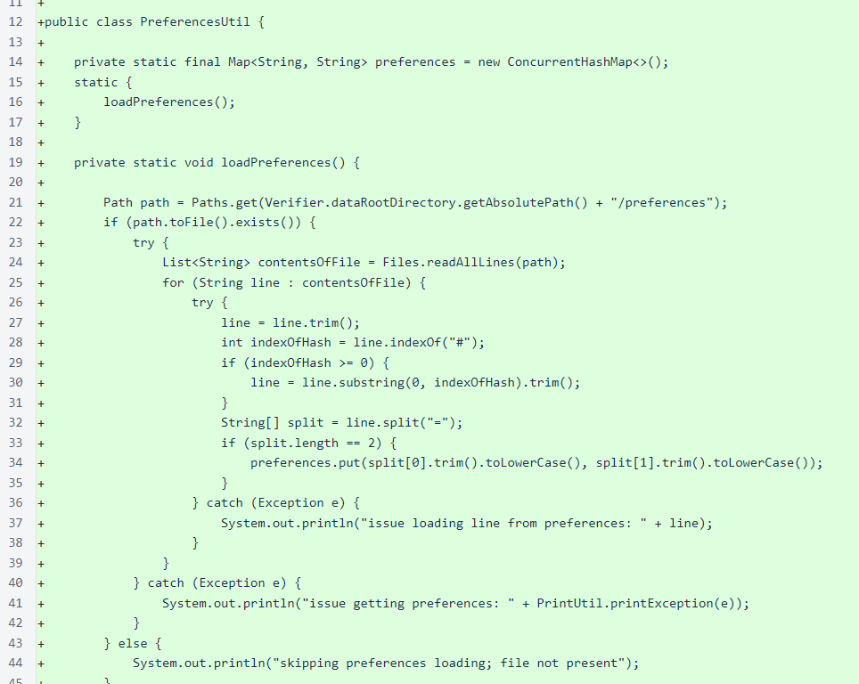

Nyzo version 502 (commit on GitHub) implements a new autovote mechanism for admitting new verifiers to the cycle.
This version affects the verifier only. The sentinel does not cast votes for new verifiers.
The security of the Nyzo blockchain relies on the diversity of the verifiers producing it. If any one entity has control of more than half of the private keys in the current cycle, that entity can determine the direction of the blockchain. While blockchain rules dictate the maximum rates at which verifiers can be added and removed, the decision of which verifiers are added to the cycle is determined through a democratic process in which each in-cycle verifier casts a vote for the next verifier to be added to the cycle.
The process for determining which new verifier to admit remains democratic in this version, but the default logic for calculating a verifier's vote has changed. Previously, the default logic attempted to establish a first-in, first-out system, but this was problematic for multiple reasons. Inconsistencies among verifiers’ long-maintained timestamp lists resulted in vote scattering, making it easy for blocs of manual votes to influence the outcome of the voting process. Also, a true first-in, first-out process is vulnerable to a single entity starting many verifiers at once and clogging the queue.
The automatic-voting logic in this version is a lottery based on a recent hash in the blockchain. While it still uses node-join timestamps to protect against the equivalent of buying a lottery ticket after numbers have been drawn, the relatively short timescale involved in the new calculation virtually eliminates vote scattering. Also, as this version ties automatic voting to blockchain data with little room for error, it raises the possibility of defining this vote as the “correct” vote. This could potentially be used in a later version to eliminate manual voting and punish in-cycle verifiers that consistently vote for the “wrong” new verifier.
This logic also has the advantage of eliminating the possibility of a single entity starting a large number of verifiers to clog the queue. With a first-in, first-out process, a few thousand verifiers could block the queue for multiple years with the current cycle size. With the new lottery process, a few thousand verifiers waiting would significantly increase a single entity’s chances of joining the cycle, but it would not exclude other verifiers entirely. In a mined blockchain, a miner who controls 51% of mining capacity at any moment can control the direction of the blockchain. In Nyzo, a 51% control of the waiting-verifier pool would only result in a roughly 51% admission rate to the cycle, and this would need to be maintained long enough to overpower the existing cycle. As of this release, the cycle size is almost 770, and the admission rate is approximately 8 verifiers per day. Also, the admission rate decreases with increasing cycle length, so takeover efforts only become more difficult over time.
In the current autovote system, those verifiers with the earliest timestamps have a higher probability of joining the cycle. In the new autovote system, all verifiers that have been waiting more than 10 minutes will have the same probability of joining the cycle. The new system is fairer and will result in a more diverse, more trustworthy system, but we do appreciate the perception that this change may be unfair to verifiers who anticipate joining the cycle soon. In the coming weeks, we will be distributing ∩250,000 to the verifiers waiting in line at the time this version was released. The amounts given to each verifier will be proportional to our calculated change in probability of the verifier joining based on the old and new autovote calculations.
The first code change in this version is a widening of the visibility of the singleSHA256()method of the HashUtil. This method is used by the lottery scoring method to ensure all verifiers have a fair chance of winning the lottery calculation.
In the NewVerifierQueueManager class, constants have been added for managing which autovote method is used. For now, verifiers are free to choose which method to use, though the new lottery method is the default. If the lottery method becomes mandatory in a later release, these constants will be removed.
New-verifier votes were previously only sent to in-cycle verifiers, as out-of-cycle verifiers do not have voting power and generally do not need to be kept apprised of the new-verifier votes. However, the verifiers that are affected by those votes should know about them, as the local vote tally on a verifier affects its decision of whether of transmit a block to try to join the cycle. So, votes are now also sent to both the current and previous subject of the vote.
The calculateVote() method still allows use of the first-in, first-out method through a preference specification, and it still allows manual overrides. However, the new lottery method is the default calculation.
The lottery calculation rounds the current frozen edge height down to the nearest multiple of 50, and the hash of the block at that height is used as a reference for scoring each verifier. The timestamp threshold prevents a manipulation in which an entity could have a large number of verifier identifiers ready, calculate all the verifiers’ scores quickly as a block is produced, and then start a verifier with the winning identifier. However, this threshold is so short that any timestamp tracking issues on a particular verifier will only affect that verifier’s vote for a very short time, instead of resulting in a permanent “demotion” of the subject verifier as would happen in the first-in, first-out process.
The heart of the lottery process is the score() method. A simple distance is calculated between the hash of the reference block and a hash of the bytewise sum of the reference-block hash and the verifier identifier. This calculation is deterministic, fair, based on blockchain data, and computationally cheap.
As a small added bonus for this version, the size at which out-of-cycle nicknames are excluded from the NicknameManager map is now configurable via the preferences file. The default threshold is still 2000.
To specify a different threshold, create a text file at /var/lib/nyzo/production/preferences and add a line to it similar to the following (this would specify a threshold of 5000):
nicknameMapThreshold=5000
The PreferencesUtil class manages operator-specified options. The file, as noted above, is located at /var/lib/nyzo/production/preferences. All keys and values are converted to lower case, and a convenience method is provided for fetching int values with a default fallback.
